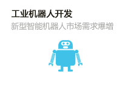

专业设置
更多专业》》

- 

南方新闻动态
更多动态》》
看南方IT新生这样过“七夕” 淬火锤炼铿锵
- 「新生动力营」军训书写特色大学生活新彩章
- 南方IT学院2018级新生动力营以一周的军训拉
-
- 【开学典礼】2018软件工程系新生动力营
- 新的学期，开启新的希望，承载新的梦想
-
- 「围观」你看你看，幸福的脸！
- 有种幸福叫付出，幸福需要靠努力来获得
- 【必看】无人机专业并不止是学操控 你还要知道这
- 无人机的发展前景十分广阔，又属于国家力推
-
- 南方IT学院的常青专业了解一下
- 南方IT学院的老牌专业——软件工程系专业
-
- 关于机器人专业你想知道的都在这里
- 未来8年机器人相关人才缺口200万人，其中
- 错过再等一年 你愿意晚一年拿本科学历吗？
-
-
- 【喜讯】祝贺南方IT学院校友汪洋再入选福布斯榜单
- 喜报，南方IT学院2008届校友汪洋再次
-
- 8月芳华莫虚度 正是读书好时节
- 企业揽才势难挡，南方IT学院毕业生遭疯抢
- 今年南方IT学院的招聘比往年提前了，原因是
-
- 感恩母校 传承辉煌 校友献给母校二十年生日颂！
- 有一种选择叫改变，有一种改变叫成就
-
- 珠海园圈科技有限公司总经理肖波祝愿南方IT
- 在南方IT学院迎来建校20周年校庆之际
【推荐】这个拿奖拿到手软的专业你想学
「解惑」谁说女生学IT不如男生？
这些南方IT校友企业有你的理想型吗？
就业明星
更多就业》》
- 汪洋
- 职位:CEO
- 就职公司：深圳云麦科技有限公司
- ----------------------------------------
- 【实战案例】汪洋，南方IT学院2008届的优秀校友，也是职业教育的典范，剑走偏锋的传奇经历可谓颠覆了中国传统教育理
- 卢霄
- 职位：总经理
- 就职公司：珠海金蝶软件有限公司
- ----------------------------------------
- 【实战案例】“不畏浮云遮望眼，只缘身在最高层。”因痴迷游戏一脚跨入IT领域的卢霄，对于这个行业有着卓越的远见和持续
- 杨玉峰
- 职位：副总经理
- 就职公司：珠海园圈科技有限公司
- ----------------------------------------
- 【实战案例】杨玉峰，南方IT学院2007届校友代表，不甘于平庸的人生，即使起点低，即使比别人晚入行，依然执着于自己
- 陈功湖
- 职位：研发主任
- 就职公司：珠海经济特区伟思有限公司
- ----------------------------------------
- 【实战案例】回首走过的岁月，南方IT学院的校友陈功湖感慨颇多，如今已经是珠海经济特区伟思有限公司研发主任的他十分庆幸那些年求学时选择了“南方”
热门专业
- 无人机应用
- 无人机开发
- 机器人集成应用
- 工业机器人开发
- 前端开发
- Java开发
- .Net开发
- Android开发
- 软件测试与运营
- Php开发
- Python开发
- 电子商务
- 视觉传达
- 平面设计
- 新媒体运营
媒体报道
免费咨询热线：400-626-8899 服务热线：0756-6811222 0756-6813333
ICP备案号:粤ICP备10023135号 粤公网安备 44040202000625号
地址：广东省珠海市斗门区白蕉科技园白蕉南路29号 版权所有：广东南方职业培训学院 网站地图 WAP
CopyRight © 1996-2018 South Vocational College. All Rights Reserved.